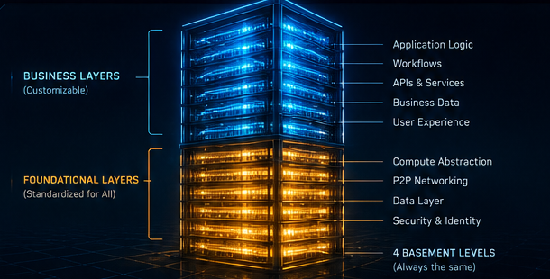
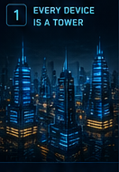
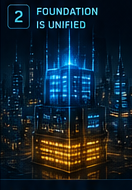
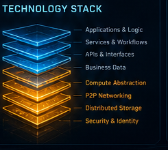

Decentralized
No central server. No single point of failure. The network is the computer.
A decentralized computational ecosystem for the future
Jungle Computing is a peer-to-peer computational framework where every device is a node, every node is a tower, and every tower is part of a living, intelligent network.
Explore the networkNo central server. No single point of failure. The network is the computer.
Every device communicates directly. Data, compute and trust flow between peers.
From a single device to planet-scale networks. Designed to grow infinitely.
Built for reliability, redundancy and self-healing across dynamic environments.
You own your data. You control your compute. You are the network.
Imagine a futuristic city. Every building is a computer. The size of the building represents its compute power. Inside every building are layers.
The foundational layers are shared by all towers. They handle identity, security, networking, storage, communication, orchestration and the core protocols that make the network work.
Above the foundation, every tower is free to build its own business, application, service or logic. These layers are customizable, private and independent.
Together, these towers form a massive peer-to-peer network where resources, information and value flow freely and efficiently.


Devices of all sizes become towers in the network.

All towers share the same foundational layers.
Build anything on top. Each tower is unique.
Towers communicate directly. No intermediaries.
Compute, data and value flow across the network.
Cities connect to cities. Networks connect globally.
A decentralized world of computational abundance.

Jungle Computing enables a world where billions of devices work together as one intelligent system.
No central control. No gatekeepers. Just a network of sovereign nodes building the future together.
Join the movementThe Computational Layer for a Decentralized World
Open Source • Community Driven • Future Focused